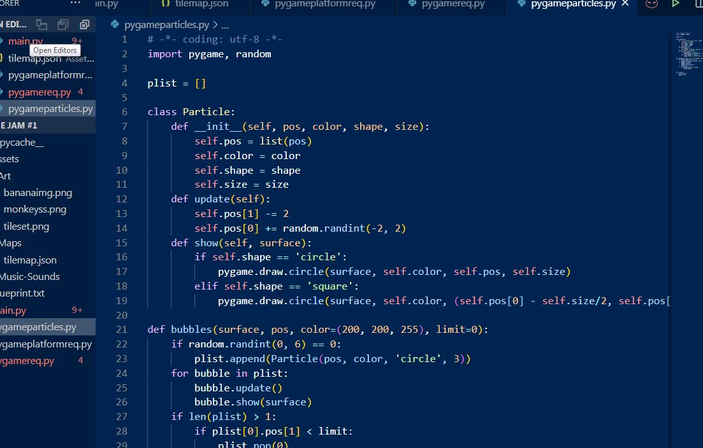
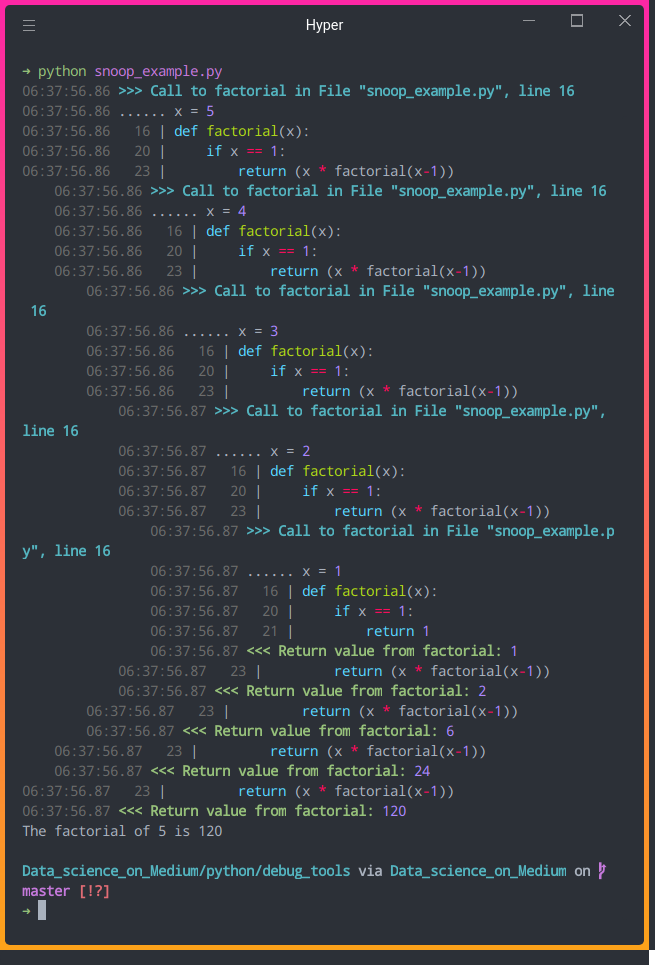
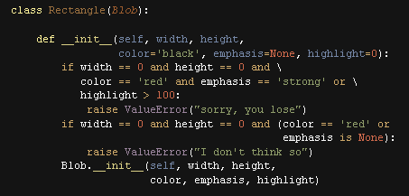

Notepadd python
example correct
some = [3,7,12,16]
7 in some
True
14 in some
False
20 not in some
True
add concatenating lists usings +
a = [1,2,3]
b= [4,5,6]
c= a + b
print(c)
[1,2,3,4,5,6]
print(a)
[1,2,3]
Proyects
print("Hello, World!")
Variables
Variables are containers for storing data values.
Creating Variables
Python has no command for declaring a variable.
A variable is created the moment you first assign a value to it.
Example
x = 5
y = "John"
print(x)
print(y)
for install pacets "pip install 'packet' for wacht 'pip list'

Lists
Lists are very similar to arrays. They can contain any type of variable, and they can contain as many variables as you wish. Lists can also be iterated over in a very simple manner. Here is an example of how to build a list.
mylist = []
mylist.append(1)
mylist.append(2)
mylist.append(3)
print(mylist[0]) # prints 1
print(mylist[1]) # prints 2
print(mylist[2]) # prints 3
# prints out 1,2,3
for x in mylist:
print(x)
More examples
Python Lists
Lists are the most versatile of Python's compound data types. A list contains items separated by commas and enclosed within square brackets ([]). To some extent, lists are similar to arrays in C. One difference between them is that all the items belonging to a list can be of different data type.
The values stored in a list can be accessed using the slice operator ([ ] and [:]) with indexes starting at 0 in the beginning of the list and working their way to end -1. The plus (+) sign is the list concatenation operator, and the asterisk (*) is the repetition operator. For example −
#!/usr/bin/python
list = [ 'abcd', 786 , 2.23, 'john', 70.2 ]
tinylist = [123, 'john']
print list # Prints complete list
print list[0] # Prints first element of the list
print list[1:3] # Prints elements starting from 2nd till 3rd
print list[2:] # Prints elements starting from 3rd element
print tinylist * 2 # Prints list two times
print list + tinylist # Prints concatenated lists
This produce the following result −
['abcd', 786, 2.23, 'john', 70.2]
abcd
[786, 2.23]
[2.23, 'john', 70.2]
[123, 'john', 123, 'john']
['abcd', 786, 2.23, 'john', 70.2, 123, 'john']

Python Tuples
A tuple is another sequence data type that is similar to the list. A tuple consists of a number of values separated by commas. Unlike lists, however, tuples are enclosed within parentheses.
The main differences between lists and tuples are: Lists are enclosed in brackets ( [ ] ) and their elements and size can be changed, while tuples are enclosed in parentheses ( ( ) ) and cannot be updated. Tuples can be thought of as read-only lists. For example −
Live Demo
#!/usr/bin/python
tuple = ( 'abcd', 786 , 2.23, 'john', 70.2 )
tinytuple = (123, 'john')
print tuple # Prints the complete tuple
print tuple[0] # Prints first element of the tuple
print tuple[1:3] # Prints elements of the tuple starting from 2nd till 3rd
print tuple[2:] # Prints elements of the tuple starting from 3rd element
print tinytuple * 2 # Prints the contents of the tuple twice
print tuple + tinytuple # Prints concatenated tuples
This produce the following result −
('abcd', 786, 2.23, 'john', 70.2)
abcd
(786, 2.23)
(2.23, 'john', 70.2)
(123, 'john', 123, 'john')
('abcd', 786, 2.23, 'john', 70.2, 123, 'john')
The following code is invalid with tuple, because we attempted to update a tuple, which is not allowed. Similar case is possible with lists −
#!/usr/bin/python
tuple = ( 'abcd', 786 , 2.23, 'john', 70.2 )
list = [ 'abcd', 786 , 2.23, 'john', 70.2 ]
tuple[2] = 1000 # Invalid syntax with tuple
list[2] = 1000 # Valid syntax with list

Data Type Conversion
Sometimes, you may need to perform conversions between the built-in types. To convert between types, you simply use the type name as a function.
There are several built-in functions to perform conversion from one data type to another. These functions return a new object representing the converted value.
Sr.No. Function & Description
1
int(x [,base])
Converts x to an integer. base specifies the base if x is a string.
2
long(x [,base] )
Converts x to a long integer. base specifies the base if x is a string.
3
float(x)
Converts x to a floating-point number.
4
complex(real [,imag])
Creates a complex number.
5
str(x)
Converts object x to a string representation.
6
repr(x)
Converts object x to an expression string.
7
eval(str)
Evaluates a string and returns an object.
8
tuple(s)
Converts s to a tuple.
9
list(s)
Converts s to a list.
10
set(s)
Converts s to a set.
11
dict(d)
Creates a dictionary. d must be a sequence of (key,value) tuples.
12
frozenset(s)
Converts s to a frozen set.
13
chr(x)
Converts an integer to a character.
14
unichr(x)
Converts an integer to a Unicode character.
15
ord(x)
Converts a single character to its integer value.
16
hex(x)
Converts an integer to a hexadecimal string.
17
oct(x)
Converts an integer to an octal string.

examples from my proyects
import csv
import pandas as pd
import seaborn as sb
import matplotlib.pyplot as plt
def show():
print("███╗░░░███╗██╗░░░██╗ ██████╗░░█████╗░████████╗░█████╗░██████╗░░█████╗░░██████╗███████╗")
print("████╗░████║╚██╗░██╔╝ ██╔══██╗██╔══██╗╚══██╔══╝██╔══██╗██╔══██╗██╔══██╗██╔════╝██╔════╝")
print("██╔████╔██║░╚████╔╝░ ██║░░██║███████║░░░██║░░░███████║██████╦╝███████║╚█████╗░█████╗░░")
print("██║╚██╔╝██║░░╚██╔╝░░ ██║░░██║██╔══██║░░░██║░░░██╔══██║██╔══██╗██╔══██║░╚═══██╗██╔══╝░░")
print("██║░╚═╝░██║░░░██║░░░ ██████╔╝██║░░██║░░░██║░░░██║░░██║██████╦╝██║░░██║██████╔╝███████╗")
print("╚═╝░░░░░╚═╝░░░╚═╝░░░ ╚═════╝░╚═╝░░╚═╝░░░╚═╝░░░╚═╝░░╚═╝╚═════╝░╚═╝░░╚═╝╚═════╝░╚══════╝")
def img():
print(" _________")
print(" |MMMMMMMMM| _")
print(" ________ |MMMMMMMMM| _|l|_")
print(" |!!!!!!!_|___|MMMMMMMMM| |lllll|")
print(" |!!!!!!|=========|MMMMM| |lllll|_______")
print(" |!!!!!!|=========|MMMMM| _|lllll|HHHHHHH|")
print(" |!!!!!!|=========|MMMMM| ________|lllllllll|HHHHH|")
print(" |!!!!!!|=========|MMMMM| |unununun|lllllllll|HHHHH|______")
print(" |!!!!!!|=========|MMMMM| |nunununu|lllllllll|HH|:::::::::|")
print(" |!!!!!!|=========|MMM__|..|un__unun|lllllllll|HH|:::::::::|")
print(" |!!!!!!|=======_=|M_( ')' );' .)unu|lllllllll|HH|:::::::::|")
print(" |!!!_!!|======( )|(. ` ,) (_ ', )un|lllllllll|HH|:::::::::| ~~~")
print(" |!!(.)!|===__(`.')_(_ ')_,)(. _)unu|lllllllll|HH|:__::::::|~~ ~~")
print(" |!(.`')|==( .)' .)MMM|M|| |un|nunun|lllllllll|``|( ,)_::::| ~~~~ ~")
print(" -(: _)|=(`. ')_)|---|- ' ``|`````|lll____ll| (_; `'):::|~~~ ~~~")
print(" | |==(_'_)|=| ______ ''/\ \' |(_'_)::::|\~~~~__|)__")
print(" | ''''|''o/`.-``~~~~~ ``-. /--\___\ ``|`````` /____\____/")
print(" .... | h ( `; ~~~ ~~ ~ ) |M_|#_#| ' -- __________|~")
print(" -- * '-.._~~__~..-' -- -* - / ~~~~ ~~~~~~")
print(" * - - -- ---- --- _.-'~~~~~ ~ ~~")
print("__--_________............-------------'''''''''''''''` ~~~~~ ~~~ ~~~~")
print("~~ ~~~~~~~~ ~~~~~~~ ~~~~~~~~~ ~~~~~~~~~~ ~~~~~~~ ~~~")
print("~~~~~~~~~ ~~~~ ~~~~~ ~~~~~~~~~ ~ ~ ~~~~~~ ~~~~~~ ~~~~ ~~~~")
print("~~~~~~~~ ~~~~~~~~~~~~~~~ ~~~~~~~~~~~~ ~~~~~~ ~~~ ~~~~~~ ~~~")
def mexico():
print(" .")
print(" \'~~~-,")
print(" \ '-,_ ")
print(" \ /\ `~'~''\ M E X I C O")
print(" _\ \\ \/~\ ")
print(" \__ \\ \ ")
print(" \ \\. \ ")
print(" \ \ \ `~~")
print(" '\\ \. /")
print(" L \ \ |")
print(" \_\ \ o | _.----,")
print(" | San \ ! /")
print(" '._ Luis \_ __/ _/")
print(" \_ Potosi ''--'' __/")
print(" \.__ |")
print(" ''.__ __.._ __\"")
print(" '' './ ` ")
def menu():
print("******MENU INVENTARIO******")
print("1. Ver invetario ---------------------------- 2. Producto Nuevo")
print("3. Modificar Producto ")
print(" the word exit, show, mexico")
option=input("Introduzca el número de la opción deseada: ")
return option
def ExisteCodigo(codigo):
with open('Inventario.csv')as File:
reader=csv.DictReader(File)
for row in reader:
if(codigo==row['codigo']):
return row
return "No existe"
def VerInventario():
#with open('Inventario.csv')as File:
#reader=csv.DictReader(File)
#contador=0
#for row in reader:
#print('' + str(row['codigo'])+'\t' + str(row['restrictiva'])+'\t' + str(row['ubicacion'])+'\t'
#+ str(row['descripcion'])+'\t' + str(row['unidad'])+'\t'+ str(row['tipo'])
#+'\t' + str(row['familia'])+'\t' + str(row['stock_minimo'])+'\t' + str(row['cantidad_inicial'])
#+'\t' + str(row['ingresos'])+'\t' + str(row['egresos'])+'\t' + str(row['perdidas'])
#+'\t' + str(row['total'])+'\t' + str(row['observaciones'])+'\t' + str(row['observacion_perdida']))
#contador=contador+1
#print('****Total Filas('+str()+')')
df=pd.read_csv(r'Inventario.csv',engine='python')
print(df)
def ProductoNuevo():
codigo = input('Ingrese codigo de producto nuevo: ')
if ExisteCodigo(codigo)=="No existe":
ubicacion=input('Ingrese codigo: ')
descripcion=input('Into Name service: ')
unidad=input('Into Password:_ ')
tipo=input(' Username ?: ')
familia=input('Email ')
#stock_minimo=0
#cantidad_inicial=0
#ingresos="0"
#egresos="0"
#perdidas="0"
#total="0"
#observaciones="N"
#observaciones_perdida="O"
restrictiva="N"
with open ('Inventario.csv','a')as File:
File.write('\n'+codigo+','+restrictiva+','+ubicacion+','+descripcion+','
+unidad+','+tipo+','+familia)
else:
print("****Error el codigo ya existe****")
def ModificarProducto():
codigo=input('Ingrese codigo modificar: ')
if ExisteCodigo(codigo)=="No existe":
print('----Error el codigo que desea modificar no existe----')
else:
ubicacion=input('Ingrese ubicacion del codigo: ')
descripcion=input('New name service')
unidad=input('New password ')
tipo=input('New username: ')
familia=input('New email ')
modificarBDD(codigo,ubicacion,descripcion,unidad,tipo,familia)
def modificarBDD(codigo,ubicacion,descripcion,unidad,tipo,familia):
result=[]
with open('Inventario.csv')as File:
reader=csv.DictReader(File)
for row in reader:
#Compara el codigo hasta encontrar lugar vacio
if row['codigo']==codigo:
row['codigo']=codigo
row['restrictiva']=row['restrictiva']
row['service']=ubicacion
row['email']=descripcion
row['password']=unidad
row['username']=tipo
row['web']=familia
#row['stock_minimo']=row['stock_minimo']
# row['cantidad_inicial']=row['cantidad_inicial']
#row['ingresos']=row['ingresos']
#row['egresos']=row['egresos']
#row['perdidas']=row['perdidas']
#a=int(str(row['cantidad_inicial']))
#b=int(str(row['ingresos']))
#c=int(str(row['egresos']))
#d=int(str(row['perdidas']))
#operacion=(a+b)-(c+d)
#total=int(str(operacion))
#stock=int(str(row['stock_minimo']))
#if total <= stock:
#temp=str(total)
# observaciones="Solicitar Material"
#row['total']=temp
#row['observaciones']=observaciones
# else:
# observaciones="Stok a favor"
# row['total']=total
#row['observaciones']=observaciones
#row['observacion_perdida']=row['observacion_perdida']
result.append(row)
with open('Inventario.csv','w')as File:
fieldnames=['codigo','restrictiva','service','email','password','username','web']
writer=csv.DictWriter(File,fieldnames=fieldnames,extrasaction='ignore')
writer.writeheader()
writer.writerows(result)
#writer = csv.DictWriter(csvfile, fieldnames=["Bio_Id","Last_Name","First_Name","late","undertime","total_minutes", "total_ot", "total_nsd", "total_absences"],
# extrasaction='ignore', delimiter = ';')
def EliminarProducto():
codigo=input('Ingrese codigo a eliminar: ')
if ExisteCodigo(codigo)=="No existe":
print('----Error el codigo que desea eliminar no existe----')
else:
eleccion=input('Si esta seguro si=S no=N? ')
if eleccion=='S':
EstadoElimandoBDD(codigo)
def EstadoElimandoBDD(codigo):
result=[]
contraseña=str(input('Ingrese contraseña: '))
if contraseña =="1324":
with open('Inventario.csv')as File:
reader=csv.DictReader(File)
estado="S"
for row in reader:
if row['codigo']==codigo:
row['codigo']=row['codigo']
row['restrictiva']=estado
row['ubicacion']=row['ubicacion']
row['descripcion']=row['descripcion']
row['unidad']=row['unidad']
row['tipo']=row['tipo']
row['familia']=row['familia']
row['stock_minimo']=row['stock_minimo']
row['cantidad_inicial']=row['cantidad_inicial']
row['ingresos']=row['ingresos']
row['egresos']=row['egresos']
row['perdidas']=row['perdidas']
row['total']=row['total']
row['observaciones']=row['observaciones']
row['observacion_perdida']=row['observacion_perdida']
result.append(row)
with open('Inventario.csv','w')as File:
fieldnames=['codigo','restrictiva','ubicacion','descripcion','unidad','tipo','familia','stock_minimo','cantidad_inicial'
,'ingresos','egresos','perdidas','total','observaciones','observacion_perdida']
writer=csv.DictWriter(File,fieldnames=fieldnames,extrasaction='ignore')
writer.writeheader()
writer.writerows(result)
else:
print('Contraseña incorrecta')
def BuscarProducto():
codigo=input('Ingrese codigo de producto a buscar: ')
if ExisteCodigo(codigo)=="No existe":
print('----Error el codigo que desea eliminar no existe----')
else:
BuscarBDD(codigo)
def BuscarBDD(codigo):
result=[]
with open('Inventario.csv')as File:
reader=csv.DictReader(File)
for row in reader:
if row['codigo']==codigo:
print('' + str(row['codigo'])+'\t' + str(row['restrictiva'])+'\t' + str(row['ubicacion'])+'\t'
+ str(row['descripcion'])+'\t' + str(row['unidad'])+'\t'+ str(row['tipo'])
+'\t' + str(row['familia'])+'\t' + str(row['stock_minimo'])+'\t' + str(row['cantidad_inicial'])
+'\t' + str(row['ingresos'])+'\t' + str(row['egresos'])+'\t' + str(row['perdidas'])
+'\t' + str(row['total'])+'\t' + str(row['observaciones'])+'\t' + str(row['observacion_perdida']))
def BuscarPorNombre():
df=pd.read_csv(r'Inventario.csv',engine='python')
palabra=str(input('Ingrese el nombre a filtrar: '))
print(df[df['descripcion'].str.contains(palabra)])
def IngresarProducto():
codigo=input('Ingrese codigo de producto a ingresar: ')
if ExisteCodigo(codigo)=="No existe":
print('----Error el codigo que desea eliminar no existe----')
else:
IngresarProductoBDD(codigo)
def IngresarProductoBDD(codigo):
result=[]
print('Datos del producto')
BuscarBDD(codigo)
ingresos=input('Cantidad a ingresar a bodega: ')
with open('Inventario.csv')as File:
reader=csv.DictReader(File)
for row in reader:
#Compara el codigo hasta encontrar lugar vacio
if row['codigo']==codigo:
row['codigo']=row['codigo']
row['restrictiva']=row['restrictiva']
row['ubicacion']=row['ubicacion']
row['descripcion']=row['descripcion']
row['unidad']=row['unidad']
row['tipo']=row['tipo']
row['familia']=row['familia']
row['stock_minimo']=row['stock_minimo']
row['cantidad_inicial']=row['cantidad_inicial']
verificar=int(str(row['ingresos']))
temp=int(str(ingresos))
total_ingreso=0
if verificar>0:
total_ingreso=verificar+temp
temp1=str(total_ingreso)
row['ingresos']=temp1
else:
row['ingresos']=ingresos
row['egresos']=row['egresos']
row['perdidas']=row['perdidas']
a=int(str(row['cantidad_inicial']))
b=int(str(row['ingresos']))
c=int(str(row['egresos']))
d=int(str(row['perdidas']))
operacion=(a+b)-(c+d)
total=int(str(operacion))
stock=int(str(row['stock_minimo']))
if total <= stock:
temp=str(total)
observaciones="Solicitar Material"
row['total']=temp
row['observaciones']=observaciones
else:
observaciones="Stok a favor"
row['total']=total
row['observaciones']=observaciones
row['observacion_perdida']=row['observacion_perdida']
result.append(row)
with open('Inventario.csv','w')as File:
fieldnames=['codigo','restrictiva','ubicacion','descripcion','unidad','tipo','familia','stock_minimo','cantidad_inicial'
,'ingresos','egresos','perdidas','total','observaciones','observacion_perdida']
writer=csv.DictWriter(File,fieldnames=fieldnames,extrasaction='ignore')
writer.writeheader()
writer.writerows(result)
def SalidaDeProducto():
codigo=input('Ingrese codigo de producto para darle salida: ')
if ExisteCodigo(codigo)=="No existe":
print('----Error el codigo que desea eliminar no existe----')
else:
SalidaProductoBDD(codigo)
def SalidaProductoBDD(codigo):
result=[]
print('Datos del producto')
BuscarBDD(codigo)
egresos=input('Cantidad de salida de bodega: ')
with open('Inventario.csv')as File:
reader=csv.DictReader(File)
for row in reader:
#Compara el codigo hasta encontrar lugar vacio
if row['codigo']==codigo:
row['codigo']=row['codigo']
row['restrictiva']=row['restrictiva']
row['ubicacion']=row['ubicacion']
row['descripcion']=row['descripcion']
row['unidad']=row['unidad']
row['tipo']=row['tipo']
row['familia']=row['familia']
row['stock_minimo']=row['stock_minimo']
row['cantidad_inicial']=row['cantidad_inicial']
row['ingresos']=row['ingresos']
verificar=int(str(row['egresos']))
temp=int(str(egresos))
total_egresos=0
if verificar>0:
total_egresos=verificar+temp
temp1=str(total_egresos)
row['egresos']=temp1
else:
row['egresos']=egresos
row['perdidas']=row['perdidas']
a=int(str(row['cantidad_inicial']))
b=int(str(row['ingresos']))
c=int(str(row['egresos']))
d=int(str(row['perdidas']))
operacion=(a+b)-(c+d)
total=int(str(operacion))
stock=int(str(row['stock_minimo']))
if total <= stock:
temp=str(total)
observaciones="Solicitar Material"
row['total']=temp
row['observaciones']=observaciones
else:
observaciones="Stok a favor"
row['total']=total
row['observaciones']=observaciones
row['observacion_perdida']=row['observacion_perdida']
result.append(row)
with open('Inventario.csv','w')as File:
fieldnames=['codigo','restrictiva','ubicacion','descripcion','unidad','tipo','familia','stock_minimo','cantidad_inicial'
,'ingresos','egresos','perdidas','total','observaciones','observacion_perdida']
writer=csv.DictWriter(File,fieldnames=fieldnames,extrasaction='ignore')
writer.writeheader()
writer.writerows(result)
def AjustePerdida():
codigo=input('Ingrese codigo de producto perdido: ')
if ExisteCodigo(codigo)=="No existe":
print('----Error el codigo que desea eliminar no existe----')
else:
AjustePerdidaBDD(codigo)
def AjustePerdidaBDD(codigo):
result=[]
contraseña=str(input('Ingrese contraseña: '))
if contraseña == "1324":
print('Datos del producto')
BuscarBDD(codigo)
perdidas=input('Cantidad de producto perdido: ')
observacion_perdida=input('Escriba observación de perdida: ')
with open('Inventario.csv')as File:
reader=csv.DictReader(File)
for row in reader:
#Compara el codigo hasta encontrar lugar vacio
if row['codigo']==codigo:
row['codigo']=row['codigo']
row['restrictiva']=row['restrictiva']
row['ubicacion']=row['ubicacion']
row['descripcion']=row['descripcion']
row['unidad']=row['unidad']
row['tipo']=row['tipo']
row['familia']=row['familia']
row['stock_minimo']=row['stock_minimo']
row['cantidad_inicial']=row['cantidad_inicial']
row['ingresos']=row['ingresos']
row['egresos']=row['egresos']
verificar=int(str(row['perdidas']))
temp=int(str(perdidas))
total_perdidas=0
if verificar>0:
total_perdidas=verificar+temp
temp1=str(total_perdidas)
row['perdidas']=temp1
else:
row['perdidas']=perdidas
a=int(str(row['cantidad_inicial']))
b=int(str(row['ingresos']))
c=int(str(row['egresos']))
d=int(str(row['perdidas']))
operacion=(a+b)-(c+d)
total=int(str(operacion))
stock=int(str(row['stock_minimo']))
if total <= stock:
temp=str(total)
observaciones="Solicitar Material"
row['total']=temp
row['observaciones']=observaciones
else:
observaciones="Stok a favor"
row['total']=total
row['observaciones']=observaciones
if row['observacion_perdida']=="Vacio":
row['observacion_perdida']=observacion_perdida
else:
row['observacion_perdida']=row['observacion_perdida']+","+observacion_perdida
result.append(row)
with open('Inventario.csv','w')as File:
fieldnames=['codigo','restrictiva','ubicacion','descripcion','unidad','tipo','familia','stock_minimo','cantidad_inicial'
,'ingresos','egresos','perdidas','total','observaciones','observacion_perdida']
writer=csv.DictWriter(File,fieldnames=fieldnames,extrasaction='ignore')
writer.writeheader()
writer.writerows(result)
else:
print('Contraseña incorrecta')
def ReporteStockMinimo():
df=pd.read_csv(r'Inventario.csv',engine='python')
print(df[df['observaciones'].str.contains("Solicitar Material")])
def ReporteInventarioTotal():
df=pd.read_csv(r'Inventario.csv',engine='python')
ord=df.sort_values(by=['ubicacion'])[['ubicacion','tipo','familia']]
print(ord)
def ReporteParcialStock():
df=pd.read_csv(r'Inventario.csv',engine='python')
print(df[df['observaciones'].str.contains("Stok a favor")])
def RellenarEspacios():
codigo=input('Ingrese codigo de producto a rellenar: ')
if ExisteCodigo(codigo)=="No existe":
print('----Error el codigo que desea eliminar no existe----')
else:
RellenarEspaciosBDD(codigo)
def RellenarEspaciosBDD(codigo):
result=[]
with open('Inventario.csv')as File:
reader=csv.DictReader(File)
restrictiva="N"
ubicacion="Vacio"
descripcion="Vacio"
unidad="Vacio"
tipo="Vacio"
familia="Vacio"
stock_minimo="0"
cantidad_inicial="0"
ingresos="0"
egresos="0"
perdidas="0"
total="0"
observaciones="Vacio"
observaciones_perdida="Vacio"
for row in reader:
#Compara el codigo hasta encontrar lugar vacio
if row['codigo']==codigo:
row['codigo']=row['codigo']
if row['restrictiva'] =="":
row['restrictiva']=restrictiva
else:
row['restrictiva']=row['restrictiva']
if row['ubicacion'] =="":
row['ubicacion']=ubicacion
else:
row['ubicacion']=row['ubicacion']
if row['descripcion']=="":
row['descripcion']=descripcion
else:
row['descripcion']=row['descripcion']
if row['unidad']=="":
row['unidad']=unidad
else:
row['unidad']=row['unidad']
if row['tipo']=="":
row['tipo']=tipo
else:
row['tipo']=row['tipo']
if row['familia']=="":
row['familia']=familia
else:
row['familia']=row['familia']
if row['stock_minimo']=="":
row['stock_minimo']=stock_minimo
else:
row['stock_minimo']=row['stock_minimo']
if row['cantidad_inicial']=="":
row['cantidad_inicial']=cantidad_inicial
else:
row['cantidad_inicial']=row['cantidad_inicial']
if row['ingresos']=="":
row['ingresos']=ingresos
else:
row['ingresos']
if row['egresos']=="":
row['egresos']=egresos
else:
row['egresos']=row['egresos']
if row['perdidas']=="":
row['perdidas']=perdidas
else:
row['perdidas']=row['perdidas']
if row['total']=="":
row['total']=total
else:
row['total']=row['total']
if row['observaciones']=="":
row['observaciones']=observaciones
else:
row['observaciones']=row['observaciones']
if row['observacion_perdida']=="":
row['observacion_perdida']=observaciones_perdida
else:
row['observacion_perdida']=row['observacion_perdida']
result.append(row)
with open('Inventario.csv','w')as File:
fieldnames=['codigo','restrictiva','ubicacion','descripcion','unidad','tipo','familia','stock_minimo','cantidad_inicial'
,'ingresos','egresos','perdidas','total','observaciones','observacion_perdida']
writer=csv.DictWriter(File,fieldnames=fieldnames,extrasaction='ignore')
writer.writeheader()
writer.writerows(result)
def main():
while True:
show()
option=menu()
if option == '1':
VerInventario()
elif option == '2':
ProductoNuevo()
elif option == '3':
ModificarProducto()
elif option == '4':
EliminarProducto()
elif option == '5':
BuscarProducto()
elif option == '6':
BuscarPorNombre()
elif option == '7':
IngresarProducto()
elif option == '8':
SalidaDeProducto()
elif option == '9':
AjustePerdida()
elif option == '10':
ReporteStockMinimo()
elif option == '11':
ReporteInventarioTotal()
elif option == '12':
ReporteParcialStock()
elif option == '13':
RellenarEspacios()
elif option == 'show':
img()
elif option == 'mexico':
mexico()
elif option == 'exit':
break
return
main()
counts = { 'chuck' : 1 , 'annie' : 42, 'jan': 100} for key in counts: if counts[key] > 10: print(key, counts[key])
whit database 'inventario.cvs'
def show():
print("███╗░░░███╗██╗░░░██╗ ██████╗░░█████╗░████████╗░█████╗░██████╗░░█████╗░░██████╗███████╗")
print("████╗░████║╚██╗░██╔╝ ██╔══██╗██╔══██╗╚══██╔══╝██╔══██╗██╔══██╗██╔══██╗██╔════╝██╔════╝")
print("██╔████╔██║░╚████╔╝░ ██║░░██║███████║░░░██║░░░███████║██████╦╝███████║╚█████╗░█████╗░░")
print("██║╚██╔╝██║░░╚██╔╝░░ ██║░░██║██╔══██║░░░██║░░░██╔══██║██╔══██╗██╔══██║░╚═══██╗██╔══╝░░")
print("██║░╚═╝░██║░░░██║░░░ ██████╔╝██║░░██║░░░██║░░░██║░░██║██████╦╝██║░░██║██████╔╝███████╗")
print("╚═╝░░░░░╚═╝░░░╚═╝░░░ ╚═════╝░╚═╝░░╚═╝░░░╚═╝░░░╚═╝░░╚═╝╚═════╝░╚═╝░░╚═╝╚═════╝░╚══════╝")